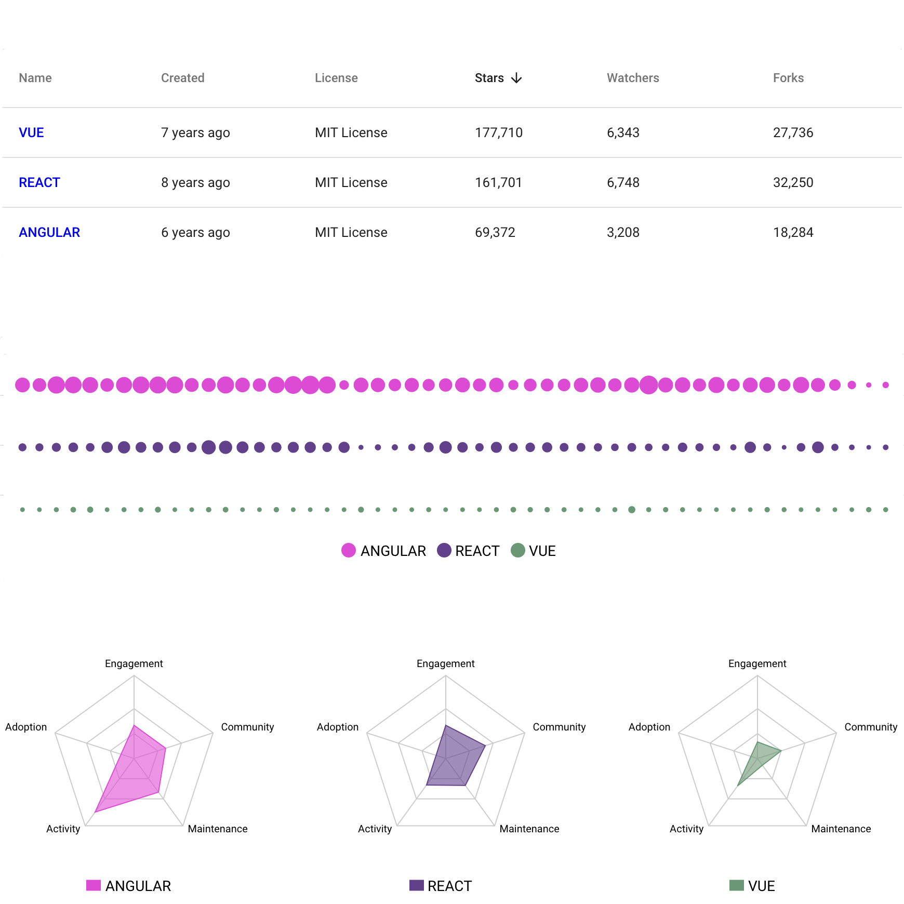
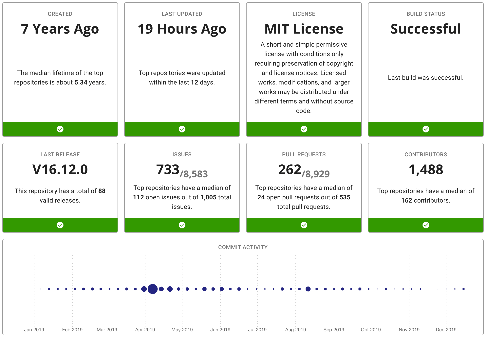
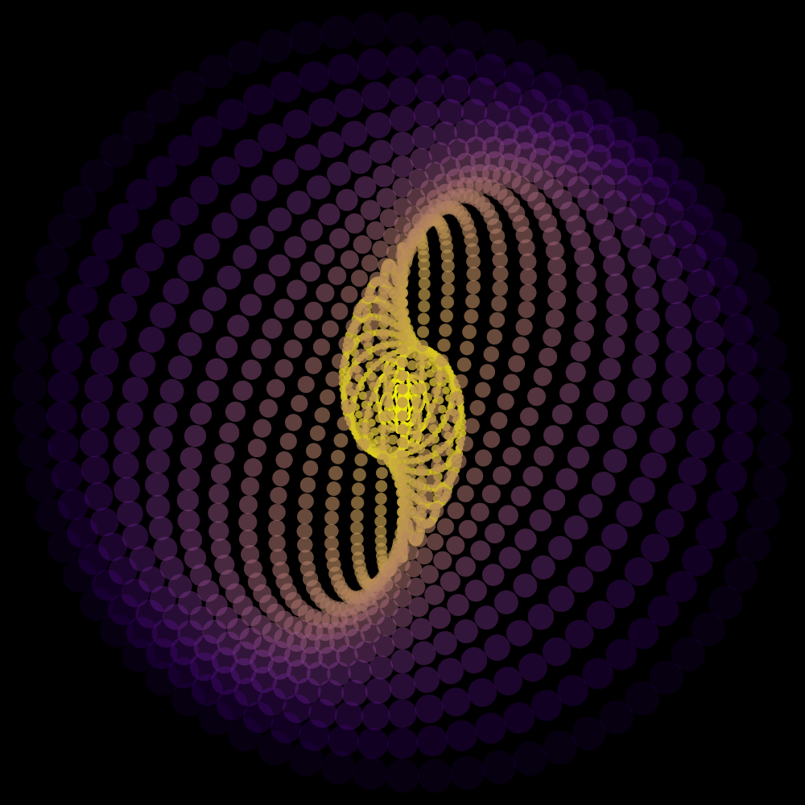
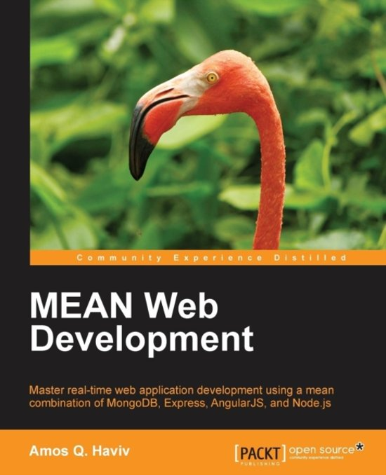

Amos Haviv
About Me
I'm a technical manager by profession and software engineer by heart, I created several open source projects and wrote two books about the MEAN stack.
I dabble in mathematics, digital art, 3D printing and astrophotography. I'm generally interested in the intersection of technology, science, and people.
Projects
CCRadar
CCRadar uses unsupervised deep learning models to track climate change news.
GitCompare
GitCompare helps you compare and analyze open-source repositories.
GitVet
GitVet provides health metrics for open-source projects.
Circles
I draw SVG circles inscribed in a beam.
Mean Web Development
Master real-time web application development using a mean combination of MongoDB, Express, AngularJS, and Node.js
Mean.js
MEAN.JS is a full-stack JavaScript solution that helps you build fast, robust, and maintainable production web applications using MongoDB, Express, AngularJS, and Node.js.